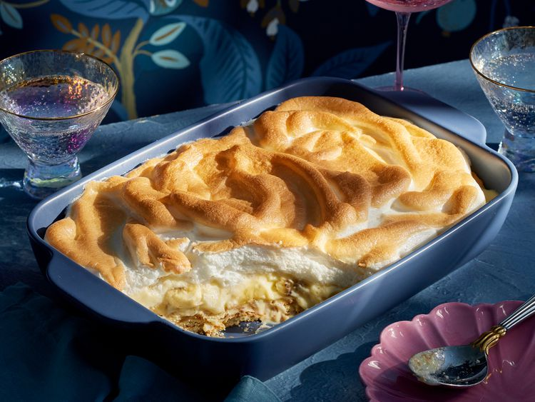

Mama's Banana Pudding

Description
Dolly Parton and her sister Rachel Parton Geroge grew up with their mama,
grandmas, and aunts making this classic dessert from scratch.
There are so many versions of banana pudding-or puddin', as we call it.
This one allows you to make it from scratch like we do and always have,
just like our mama and our grandmas and our aunts used to do. Just be sure
to make enough! After putting in the effort, you don't want to be the one
to go, "Where's the banana pudding? I missed it!"
Ingredients
- 1 cup and 1 tablespoon sugar
- ½ cup flour
- ⅛ teaspoon salt
- 6 cups whole milk
- 6 egg yolks
- 3 eggs
- ½ cup butter
- 3 teaspoons vanilla extract
- 9 ripe bananas
- 2 (12 ounce) boxes vanilla wafers
- 6 egg whites (see "Test Kitchen Tip")
- ¼ teaspoon cream of tartar
Steps
-
Stir together 1 cup sugar, the flour, and salt in a large bowl. Whisk in
milk, egg yolks, and whole eggs until well combined and smooth.
-
Melt butter in a large saucepan over medium heat. Pour milk mixture into
saucepan with butter; reduce heat to medium-low and whisk constantly
until the mixture has thickened, coats the back of a spoon nicely, and
begins to bubble, about 20 minutes. Remove from heat and stir in 2
teaspoons vanilla. Cover and let custard cool to room temperature, about
1 hour. (It will continue to thicken as it cools.)
-
Peel and slice bananas. Line the bottom and sides of 2 (9x13-inch)
broiler-safe casserole dishes with vanilla wafers. Layer banana slices
over wafers. Pour cooled custard over bananas and wafers, smoothing top
with a knife or spatula.
-
For meringue, in a large clean bowl, using an electric mixer or a stand
mixer fitted with the whisk attachment, beat egg whites, cream of
tartar, and the remaining 1 tablespoon sugar and 1 teaspoon vanilla at
high speed until stiff peaks form, about 5 minutes. Spoon meringue over
top of custard, covering it completely.
-
Set oven rack about 4 inches from broiler; turn broiler to high. Quickly
broil meringues until browned, about 1 to 2 minutes. (This happens very
quickly, so keep a close eye on it.)
-
Remove dishes from oven, allow meringue to cool slightly, about 15
minutes, and serve. (Chill, covered, up to 4 days.)